Real tomato photos with the background removed, shown on black like on the watch. Each has the large version, the real size (54×54 px) and a mock of the watch's app list.
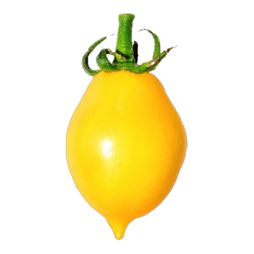
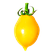
real sizeYour photo
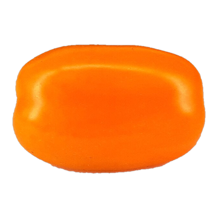
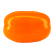
real sizePhoto: Fructibus, CC0 (Wikimedia Commons)
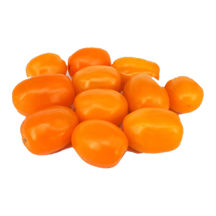
Photo: Fructibus, CC0 (Wikimedia Commons)
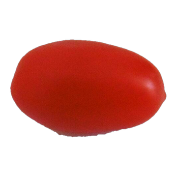
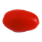
real sizePhoto: NeoMeesje, CC BY-SA 4.0 (Wikimedia Commons)
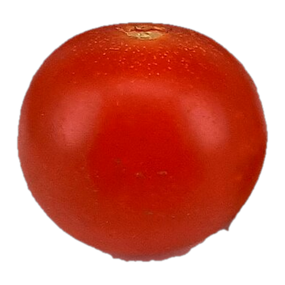
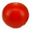
real sizePhoto: Fructibus, CC0 (Wikimedia Commons)
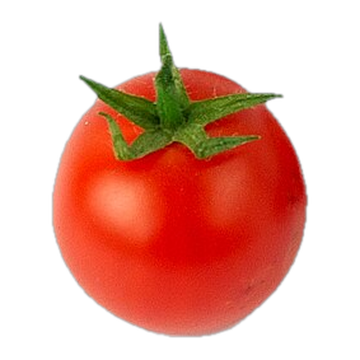
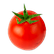
real sizePhoto: Luc Viatour, CC BY-SA 3.0 (Wikimedia Commons)
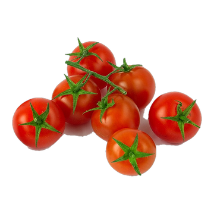
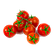
real sizePhoto: Luc Viatour, CC BY-SA 3.0 (Wikimedia Commons)